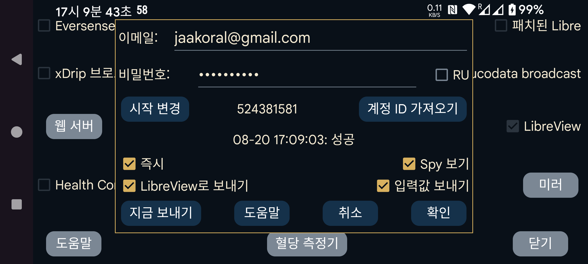

ar be de es fr hi it ja ko nl pl pt ru tr uk uz zh en
Juggluco는 혈당 데이터와 입력값을 LibreView로 보낼 수 있습니다.
LibreLink 앱과 마찬가지로 최근 89일의 데이터를 LibreView로 보냅니다.
이 서비스를 사용하려면 다음에서 LibreView 계정을 만들고 https://libreview.com 여기에 이메일 주소와 비밀번호를 지정해야 합니다. 같은 기간의 데이터를 둘 이상의 소스(예: LibreLink 앱과 Juggluco 양쪽)에서 같은 LibreView 계정으로 보내지 마십시오. 기존 기기는 LibreView의 계정 설정 → 내 기기에서 삭제할 수 있습니다. 또는 새 LibreView 계정을 만들 수 있습니다.
기능을 켜려면 "LibreView로 전송"도 선택해야 합니다.
Juggluco는 앱을 벗어날 때마다 새 데이터를 LibreView로 보내되, 이전 20분 안에 이미 보냈다면 다시 보내지 않습니다. 다음을 눌러 수동으로 LibreView에 보낼 수도 있습니다: "지금 보내기".
혈당 값 외에 입력값도 LibreView로 보낼 수 있습니다. 이를 위해 "입력값 보내기"를 누르고 각 레이블이 무엇을 의미하는지 지정해야 합니다.
RU: https://libreview.com 대신 https://libreview.ru를 사용하는 경우 이 옵션을 설정해야 합니다.
즉시: Libre 2 또는 3 센서에서 혈당 값이 도착하는 즉시 LibreView로 보냅니다. LibreLinkUp과 함께 사용할 때만 유용합니다. 사용하려면 Abbott의 Libre 앱 중 하나에서 이 LibreView 계정에 LibreLinkUp 연결을 추가해야 합니다. (거주 국가에 Abbott Libre 앱이 없다면 패치된 Libre 3 앱을 사용할 수 있습니다.)
LibreLinkUp이 화면을 자동 새로 고침하지 않아 값이 즉시 보이지 않을 때도 있습니다. 주의하십시오. LibreLinkUp은 오래된 값을 보여줄 수 있습니다. 그래프를 누르면 현재 값이 아니라 이전 측정값을 표시하므로 자세히 보지 않으면 잘못 읽기 쉽습니다.
보기 여부 전송: 이 옵션을 켜면 Juggluco는 값이 조회되었는지 여부를 LibreView로 보냅니다. 끄면 항상 조회되지 않았다고 보냅니다. 이 정보는 다음도 켜져 있어야 LibreView에 안정적으로 전송됩니다: 즉시 . Libre 3의 모든 조회를 포착하려면 Juggluco가 인터넷에 계속 연결되어 있어야 합니다. Libre 2는 앱이 종료되지 않는 한 모든 조회를 기억합니다.
시작 변경: 새로 시작하여 지정한 날짜와 시간부터 데이터를 다시 보냅니다. 새 LibreView 계정으로 전환할 때 눌러야 합니다.
마지막 LibreView 전송 시도의 결과가 "계정 ID 가져오기" 버튼 아래에 표시됩니다.
LibreView는 분석에 기록 값을 사용하고 Juggluco의 통계 화면은 스트림 값을 사용합니다(왼쪽 가운데 메뉴→통계). 이 차이 때문에 LibreView와 Juggluco 통계 사이에 약간의 차이가 생깁니다. 스트림 값이 더 극단적이므로 Juggluco의 결과가 다소 더 부정적으로 나옵니다. 범위 내 시간은 더 낮고 변동성은 더 큽니다. 또한 센서 활성 시간 도 Juggluco에서 더 작습니다. Juggluco는 누락된 스트림 값을 하나하나 계산하기 때문입니다.
Juggluco는 동시에 여러 센서와 연결할 수 있지만 LibreLink는 한 번에 센서 하나만 처리합니다. Juggluco도 한 번에 한 센서의 데이터만 LibreView로 보냅니다. 먼저 한 센서의 데이터를 보내고, 그 센서에서 더 이상 보낼 데이터가 없을 때 다음 센서의 데이터를 보냅니다. LibreLink의 한 센서 정책을 모방하기 위해 Juggluco가 다음 센서로 넘어가면 이전 센서로 돌아가지 않습니다. 따라서 여러 센서를 동시에 사용하며 더 최근에 추가한 센서가 오래된 센서보다 먼저 끝나면, 그 오래된 센서의 데이터는 더 이상 LibreView로 전송되지 않습니다.
계정 ID 가져오기: LibreView 계정 ID만 받고 데이터는 보내지 않으려면 이메일 주소와 비밀번호를 입력하고 "계정 ID 가져오기"를 누르십시오. 같은 줄에서 이 버튼 앞에 계정 ID가 표시됩니다(시간이 걸릴 수 있으며 화면은 자동으로 새로 고쳐지지 않습니다). LibreView 서버에서 계정 ID를 가져오면 이 LibreView 계정으로 Abbott Libre 3 앱에서 이미 사용했던 FreeStyle Libre 3 센서를 사용할 수 있습니다.
LibreView 계정 ID 번호는 LibreView 보고서 주소 표시줄에 표시되는 UUID에서 변환 하여 Juggluco에 직접 입력할 수도 있습니다.
Sibionics 및 Dexcom 센서의 데이터는 LibreView로 보내지지 않습니다.
LibreView 형식으로 데이터를 저장하려면 왼쪽 가운데 메뉴→내보내기 또는 Juggluco의 웹 서버 에서도 할 수 있습니다. Dexcom과 Sibionics 센서의 혈당 값도 포함됩니다.